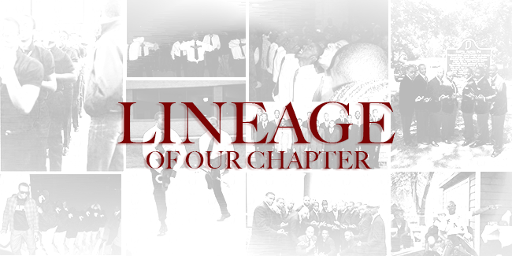

Kappa Alpha Psi

Delta Pi Chapter

- May 26, 1956
- Delta Pi Charter Members
- Burton Caldwell
- Calvin Devardeleben
- Arnold Fisher
- Henry Fisher
- Robert Fisher
- William Ford
- James Hamlett III
- David Jeters
- Joel Jones
- Audrick Lewis
- John McCullough
- James Moseley
- Robert Orse
- Tyrone Tutt
- SPRING LINE OF 1957
- Edgar Abrams
- Amos Freeman
- Samuel Harris
- Charles Jackson
- Gerald Sometville
- WINTER LINE OF 1957
- William Better
- Charles Davis
- Maxie Jackson
- Hugh Wade
- Clarence White
- SPRING LINE OF 1958
- Maurice Jones
- WINTER LINE OF 1959
- Paul Brown
- Chester Trahan
- SPRING LINE OF 1959
- James Bradley
- Marvin Scott
- Timothy Springer
- John Young
- FALL LINE OF 1959
- George Brooks
- Dalton Roberson
- WINTER LINE OF 1959
- Freddie Cody
- SPRING LINE OF 1960
- Roy Bates
- FALL LINE OF 1960
- Clarence Carter
- William Walker
- SPRING LINE OF 1961
- Frazier Alexander
- Gerald Anderson
- Benjamin Callaway, Jr
- WINTER LINE OF 1962
- Joseph Arnett
- William Daniel
- John Kemp
- Arthur Moore
- SPRING LINE OF 1962
- Hulett Edwards
- Carton Holmes
- Wilbur McReynolds
- Roger Thurston Jr
- Charles Wilson
- FALL LINE OF 1962
- Cleveland Brown
- Harold Henderson
- Harold Yates
- WINTER LINE OF 1963
- Charles Swarm
- Herman Taylor
- SPRING LINE OF 1963
- William Curtiss
- General Gholson
- George Knox
- FALL LINE OF 1963
- James Garrett
- Ryland Melford
- Robinson Nunn
- Hartford Jennings
- John Robertson
- Michael Snipes
- SPRING LINE OF 1964
- Michael Ashburne
- Charles King
- Frank Martin
- Charles Patrick
- FALL LINE OF 1964
- Clifford Stoval
- Lamar Richardson
- SPRING LINE OF 1965
- Tony Rutherford
- FALL LINE OF 1965
- Richard Allen
- Michael Helms
- Charles Lewis
- Donnell Moorer
- Winter '66
- MAGNIFICENT 7
- John Berry
- Richard Butler
- John Dean
- Greenlee John
- Ron Jenkins
- Charles Moore
- Larry Taylor
- Spring 66
- Dynamic Duo
- Robert Robinson
- Thomas Bradley
- Spring '66
- JIVE 5
- Williams Ashworth
- Charles Beatty, Jr.
- Dennis C Davenport
- JW Simmons
- Larry Walls
- Winter '67
- FABULOUS, FU 4
- Benjamin Crockett
- Ronald Moten
- Jesse Smith
- Virgil Smith
- Fall '67
- PHANTOM 5
- Robert Jackson
- James Mathis, Jr.
- Jerel Owens
- Ronald Ruffin
- Kenneth Seay
- Spring '68
- RETURN OF THE CC7
- David "Methuselah" Byrd
- Ronald "Ice Cube" Seay
- Cornell "E.L. Fats" Jacques
- Charles "Psychedelic Dick" Beady
- Alvin Bessent
- William "Gibbs" Garling
- James "Neptune" Amin
- Winter 69
- SWEET 6
- Sterling Anthony
- Herbert Baker
- Stanley Bush
- Bobbie McDaniel
- Walter Middlebrooks
- Vernon Shadd
- Spring '69
- INCOGNITO FLEET FUNNY FUMBLING 4
- William Davis
- Duane Elston
- Charles Mays
- Elam Mohammed
- Fall 69'
- FRANTIC, FUNKY, 15
- Ronald Ansley
- Leroy Bannister, Jr
- Harold Bulger
- Freelon Carter
- Marvin Cooper
- Larry Ervin
- William Hanley
- Darrell Kelley
- Ervin Lofton
- Alcin McChester, Jr.
- James McLean
- Shelly Moncrief Jr
- Kirk Rhodes
- Robert Rogers
- Chucky Smith
- Spring '70
- FABULOUS PHANTOM 15
- Richard Anderson
- Greg Davis
- Randy Gardner
- Mitt Goins
- Edward Jefferson
- Stanly Jenkins
- Donell Moore
- Eddie Oliver
- Alvin Rainey
- Dennis Robinson
- Joeseph White
- Jerome White
- Clarence Willis, Jr.
- Robert Wright
- Robert Collier
- Fall' 70
- DYNAMIC DUO
- Michael Harding
- Learman Hicks
- Spring '71
- SUPER SWEET 5
- Bruce Brunson
- William Burke
- Timothy McDaniel
- Joseph Robinson
- Earl Watts
- Fall '71
- EBONY FIST 5
- Carton Boisseau
- Albert Galloway
- George Simmons
- Harry Stern
- Dennis Toles
- Winter '72
- THEIVING NASTY 22
- Cleveland Bohler
- Darryl Byrd
- Raven Canon
- Excell Carvette
- Kenneth Coe
- Minoss Coleman
- James Faulkner
- Harold Gibson
- Reginald Hayes
- Amos Hewitt
- Keith Ledford
- Gerald Marzette
- Tyler McClendon, Jr
- Ronald Moore
- Wendell Niles
- Joseph Powell
- Art Sims
- Mark Smith
- Willie Thomas
- Ben Thurman
- Donald Washington
- Doug Williams
- Spring '73
- APRIL FOOLISH TARDY 10
- Joseph Bell
- Gerald Bridges
- Tyrone Fambro
- Newton Genry, III
- Jimmie Green
- Athony Hewitt
- James Howse
- Michael Johnson
- Alde Lewis
- Ed Smith
- Winter '75
- SUGAR PIE 5
- Satchell Garrison
- Edward Bradford
- Darryl Buchannan
- Leland Stein
- Larry Robinson
- Spring '75
- TROUBLE SHOOTING 5
- Doug Peoples
- Murray Simmons
- Brian Smith
- David Swilley
- Ken Young
- Spring '76
- 7 TO THE MAX
- LD David Branch, Tribe
- BD Thomas Yarrell, Luv
- Robin Campbell, Krusher
- Percy Davis III, Slim
- Anthony Simmons, Allstar
- Richard Pryor
- TD Darrell Wilson
- Fall '76
- TWO O'CLOCK SHARP
- LD Thomas Duncan
- TD Gilbert Morgan, Krusher
- Spring '77
- 4 BAD INDIVIDUALS
- LD Roy Jones
- Ricardo Harris
- Reginald Carter, Tribe
- TD Bobby Adams, Krusher
- Winter '78
- Double Dose Of Love
- LD Billy Strong, Krusher
- TD Bernie Barden, Luv
- Spring '78
- 6 PHENOMENON INVISIBLE NUPES
- LD Larry Trotter, Krusher
- BD Mario Morrow, Slim
- Dwight Belyue, Allstar
- Don Parker, Playboy
- Anthony King, Stone
- TD Kurt Joseph, Tribe
- Spring '79
- Seven Obviously Unique Lovers
- LD Curtis Walton, Stone
- BD Vincent Lang, Slim
- Eddie Stephens, Tribe
- Maurice Upchurch, Playboy
- Greg Johnson, Luv
- Frank Dawkins, Allstar
- Barnett Stewart, La Krusher
- Spring '80
- TRAGGIC EXPERIENCE ACCIDENTAL 5
- Walter Wilbert
- Reginald Johnson
- Jeffrey McKenzie
- Andre Morrow
- Craig Shelton, Krusher
- Spring '81
- 8 "CHI CHI" DOWN
- Mark Adams
- Durell Hoskins
- Don Hunter
- Roderick Jackson
- Christian Pierce, Tribe
- Cliff Shelton
- Curtis Thompson
- Eric Crumpler
- Fall '82
- NOBLE 9
- Eric Ayers
- Darryl Cullins
- James Dorsey
- Jeffrey Howze
- Larry Jenkins
- Anthony Parrish
- Myron Tucker
- Reginald Cobb
- Andre Wiseman
- Spring '83
- DIAMOND 10
- Joseph Adams
- Mike Alston
- Robert Campbell
- Aaron Dent
- Dennis Hutson
- Terence Bishop
- David Bush
- Bruce Wilson
- Phil Hannah
- Darnell Manning
- Spring '84
- 14 KARAT GOLD
- Cecil Douglas, Playboy
- Darryl Fordham, Slim
- Terry Francis, Slim
- Sherrod Johnson, Stone
- Jerel Johnson, Allstar
- Theo Jones, Tribe
- Kevin King, Stone
- Kevin Kyles, Stone
- Martin Raxton, Luv
- Anthony Wilbon, Tribe
- Jason Bass, Tribe
- Lamont Foster, Playboy
- Stevan Lynn, La Krusher
- Randall Washington
- Spring '85
- PINNACLE 6
- Wayne Hamilton
- Keith Mixon
- Gregory Taylor
- Gerald Banks
- Jeffrey Hillard
- Daryl Jones
- Spring '87
- INNOVATIVE 8
- Brian Daniels, AllStar
- Robert Dobbs, Tribe
- Ron Evans, Stone
- Calvin Hall, Luv
- Reginald Hamlett, Slim
- Michael Houston, Stone
- Mark Lewis, La Krusher
- Betram Marks, Playboy
- Spring '88
- ODYSSEY 8
- Darryl Campbell
- Aaron Clinkscale
- Stacye Townsend
- Daryl Greer
- William Langford
- Bevon Tyler
- Sandy Brown
- Brian Kennedy
- Spring '89
- 6 SUAVE
- Jason Gilliam
- James Millender
- Terry Porter
- Courtney Shelton
- Dereck Jaggers
- Lucius Vassar
- Spring '90
- F.U.R.I.O.U.S. F.I.V.E.
- Richard Walker
- Leslie Carrol
- Michael Hearn
- Robert Porter
- Donald Webster
- Spring '91
- 6 FEET DEEP
- Arnie Anderson, Tribe
- Mike Bailey, Allstar
- Ken Larkin, Stone
- Reginald Motley, La Krusher
- Ray Sams, Slim
- Maurice Stokes, Luv
- Fall '92
- 9 TO THE LIMIT
- Kerry Adams
- Dierk Hall
- Mandell Nobles
- Tyrone Sanders
- Randell Seaton
- Kevin Smith
- Anton Chastan
- Kevin Greene
- Jimmie McMillan
- Spring '93
- 8 BALL
- Dierk Boswell
- Simon Charles
- Kevin Gibson
- Lawrence McClown
- Kris Sanford
- Carl Smith
- Brian Swift
- James Walls
- Spring '96
- 7 D.E.A.D.L.Y S.I.N.S
- LD Curtis Drake, La Krusher
- BD Eric LaShore, Stone
- Jamal Womble, Stone
- Chris Way, Allstar
- Keith Jennings, Slim
- Tavius Jackson, Luv
- TD Demario Walton, Tribe
- Spring '98
- MAGNIFICENT 7
- Donnell White, All Star
- Kevin Simpson, Playboy
- Harry Furlow, Slim
- Armand Sawyer, La Krusher
- Corey Wilson, Luv
- Russell Allen, All Star
- Marquis Harris, Stone
- Spring '99
- 5 D.E.A.D.L.Y. V.E.N.O.M.S.
- LD Jeffrey Romain, Tribe
- BD Michael Dawson, Playboy
- Gregory Foster, La Krusher
- Rashahn Goldsmith, Stone
- TD Eldon Brown, Allstar
- Spring '06
- 11 D.O.A.
- Christopher Powell, Stone
- Anthony Hatcher, Playboy
- Christopher Hood, La Krusher
- Marcus Graham , Allstar
- Sean Williams, Tribe
- Matthew Porter, Slim
- Randy McPherson Jr, Stone
- Gabriel Bridgman, Slim
- Dreux Baker, Tribe
- DeMario Zillner, Allstar
- Christopher Gandy, La Krusher
- Spring '08
- S.I.C.K. 7
- Renaldo Major, Luv
- Damon Young, Allstar
- Ahmed Ogunbunmi, Tribe
- Wendell Claxton, La Krusher
- Duane Robinson, Stone
- Kaushik Sarkar, Stone
- Matthew Thomas, Playboy
- Spring '09
- S.T.A.R.T.I.N.G. 5
- LD Kyle Barnes, Luv
- Timothy City, Stone
- Ahmad Proctor, Playboy
- BD Brandon Gilliam, La Krusher
- TD Harlan David Fisher II, Allstar
- Fall '10
- F.I.N.A.L. F.O.U.R.
- LD Terry Ward, Luv
- BD Evan Williams, Tribe
- Damien O'Neal, Slim
- TD Tembekile Nance, La Krusher
- Spring '12
- 7 S.E.A.S
- LD/BD Curtis Mattison, Tribe
- Jalen Page, Slim
- George Williams, La Krusher
- Shaka Dukes, Playboy
- Menachem Dukes, Stone
- Deon'ta Bailey, All Star
- TD Alexander Flanagan, Luv
- Fall '13
- S.O.L.I.T.A.R.Y. K.O.N.F.I.N.E.M.E.N.T.
- LD/BD/TD Carlos McSwain, Playboy